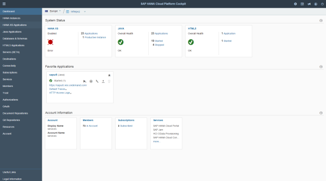

A web-based administration interface provides access to a number of functions for configuring and managing cloud applications, services, and accounts.
The figure below shows an example view of the cockpit and is followed by an explanation:
The cockpit provides an overview of the applications available in the different technologies supported by SAP Cloud Platform (SAP HANA XS, Java, and HTML5), and shows other key information about the account. The tiles contain links for direct navigation to the relevant information.
The Favorite Applications panel shows all applications that you have added to your favorites, making key information about them available at a glance. You can manage your favorites directly from there and navigate to the application overview for further details and options.
Charts show the number of requests and CPU consumption on the overview page of a Java application.
The cockpit provides integrated access to all the accounts for which you have a user. Which accounts are shown to you in the cockpit, depends on the version of the cockpit you are using. For example, you can access all the accounts you operate on the productive landscape (at hana.ondemand.com). If you also have a developer account that enables you to try out things in a non-productive environment, you need to access a separate cockpit (at hanatrial.ondemand.com) in which you will only see your trial account created for this purpose.
For more information, see Landscape Hosts and Accounts.
Log on to the cockpit using the relevant URL. The URL depends on the following:
The account type
This can be a paid customer or partner account, or a free developer account type.
For more information, see Account Types.
The data center
For customer and partner accounts, the logon URL differs in terms of the data center associated with the account, which is the physical location (for example, Europe, or US East) where applications, data, or services are hosted. For example, use https://account.hana.ondemand.com/cockpit to log on to a customer or partner account located in Europe.
For more information, see Landscape Hosts and Accounts.
When you log on to the cockpit for the first time, you get to the account overview page. Depending on the use case, productive or trial, you can have a single or several accounts assigned to you. You can select an account in the overview page. You can then drill down to the account details and to access the applications deployed in this account and related actions.
SAP Cloud Platform provides High Contrast Black (HCB) theme support. You can switch between the default theme and the high contrast theme using the Settings menu in the header toolbar. Once you have saved your changes, the cockpit starts with the theme of your choice.
The cockpit icons are designed in high-contrast mode.
You can select the language in which the cockpit should be displayed using the Settings menu in the header toolbar:
English
Japanese
The main screen areas of the cockpit comprise the content area and the navigation area. The navigation area is composed of the breadcrumb navigation that comes under the header and the navigation entries to the side of the content area. The entries are grouped into categories. For example, choose Applications to manage the applications for the account in question.
Use the breadcrumb navigation to access the different applications deployed in your account and associated activities. Note the following:
A dropdown menu is available for each of the elements that enables you to switch to other objects by clicking the triangular selector. For example, use the dropdown menu to switch between different applications in your account.
The element that is currently selected appears as a hyperlink in the breadcrumb navigation. For example, a click the link for the application entry launches the application.
You can navigate upwards in the hierarchy or backwards to the previous navigation target using the links in the breadcrumb navigation.
Each level determines which navigation options are available and the information that is displayed.
For more information, see Product Prerequisites and Restrictions.
Use Notifications to stay informed about different operations and events in the cockpit, for example, to monitor the progress of copying an account. The Notification icon in the header toolbar provides a quick access to the list of notifications and shows the number of available notifications. The icon is visible only if there are currently notifications.
Each notification includes a short statement, a date and time, and the relevant account. A notification informs you about the status of an operation or asks for an action. For example, if copying an account failed, an administrator of the account can assign the corresponding notification to himself and provide a fix. The other members of this account will see that the notification is already assigned to someone else.
You have the following options:
Dismiss a notification.
Assign a notification to yourself. It's possible also to unassign yourself from a notification without processing it further.
Once you have you completed the related action, you can set the status to complete. This dismisses the corresponding notification for everyone else.
You can access the full list of notifications (also the ones you have dismissed earlier) by choosing Notifications in the navigation area at the data center level.